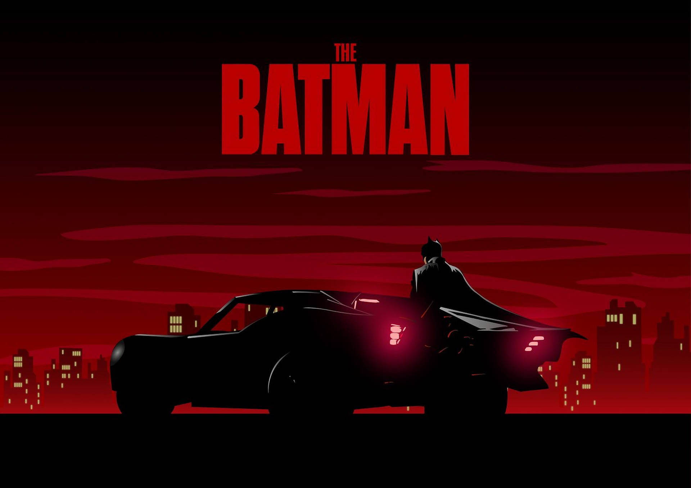

BATMAN’S ROGUES - TIMELINE
Since his first appearance in 1939, Batman and his "Family"(including Robin and Batgirl) have defeated hundreds of villains in numerous comic book series. These include the Rogues Gallery, supervillains and lesser villains, everyday criminals. This timeline shows the first appearance of each named Batman Family villain in Comics.
1939
Alfred Stryker, Frenchy Blake, Dr. Death, Mad Monk, Joe Chill, Professor Carl Kruger
1940
Whip, Professor Hugo Strange, Catwoman, Joker, Lex Luthor, Tony Zucco, Clayface, Wylie, Puppet Master
1941
Scarecrow, Penguin, Professor Radium
1942
Adolf Hitler, Salvatore eeThe Boss" Maroni and the Maroni Crime Family, Two-Face, Rag Doll
1943
Tweedledum and Tweedledee, Crime Doctor, Rob Callender, Mr. Lyon, Cavalier
1947
Clock II, Huntress, Penny Plunderer, Gentleman Ghost
1949
Tiger Shark
1944
Solomon Grundy
1946
Crazy Quilt
1948
Mad Hatter, Riddler
1950
Deadshot, Matt Thorne
Joker
Batman #1 (April 1940)
Joker was introduced as a serial killer, dispatching hapless victims with his grin-inducing Joker venom. He would later be written as a sadistic criminal mastermind, the embodiment of chaos and dark humor. Joker is the iconic archnemesis and antithesis of Batman, obsessed with hurting him in any way possible, including murdering the second Robin (Jason Todd) and paralyzing Batgirl (Barbara Gordon).
1951
Key, Killer Moth
1952
King of Cats, Trapper, Firefly
1953
Gorilla Boss, Stranger
1954
Mr. Camera, Mirror Man
1956
Mole, Hatman, Lew Moxon
1957
Brainy Walker, Professor Milo, Signalman
1958
False-Face, Terrible Trio, Calendar Man, Dr. Double X
1959
Mr. Freeze, Crimson Knight, Blue Bat, Thor, Bruno Groft and Lekkey
1960
Zebra-Man, Spinner, Graham, Atomic-Man, Kite Man, Catfoot Regan and Beetles Branagan, Dummy, Gentleman Jim Jansen, Rainbow Beast
1961
Raven, Wasp, Brand, King Cobra, Elemental Man, Planet Master
1962
Mr. Polka-Dot, "Brains" Beldon, False Face Society
Two-Face
Detective Comics Issue #66 (August 1942)
Harvey "Apollo" Dent was once the dis- trict attorney of Gotham City, an ally of Batman and then-Police Cap- tain James Gordon. But after getting scarred by acid, he becomes Two-Face, a villain with multiple personalities who bases his decisions upon the flip of a coin.
1963
Catman, Dr. Hurt, Gorilla Gang, Dr. No-Face
1964
Zodiac Master, Composite Superman, Owlman, Outsider
1965
Getaway Genius, Johnny Witts, Blockbuster, Eivol Ekdal
1966
Bouncer, Bizarro-Batman, Royal Flush Gang, Monarch of Menace, Cluemaster, Lord Death Man, Captain Calamity, Poison Ivy, Silken Spider, Dr. Tzin-Tzin, Dr. Zodiac, Eraser, Spellbinder
1967
Bag O'Bones
1968
Fearsome Foot-Fighters, Batman Revenge Squad, Copperhead, Proteus, Sensei
1970
Man-Bat, Dr. Ebeneezer/ Ebenezer Darrk, Ten-Eyed Man
1971
Ruby Ryder, Ra's al Ghul, Ubu, Dark Archer, Reaper
1972
Dr. Moon, Lump, Colonel Sulphur
1973
Spook
1974
Werewolf, Harvey Bullock
Owlman
Justice League of America Issue #29(august 1964)
Owlman is the reverse-Batman of Earth-Three, a member of the Crime Syndicate of America- the opposite of the Justice League of America- with mind control powers and night vision. In later issues, Owlman is actually Thomas Wayne, Jr., the older brother of Bruce Wayne.
1975
Bronze Tiger, Sterling Silversmith, Lady Shiva
1976
Gustav DeCobra, Kobra, Underworld Olympics, Amba Kadiri, Captain Stingaree, Duela Dent, Black Spider, Calculator
1977
Tobias Whale, Dr. Phosphorus, Rupert Thorne, Professor Ojo
1978
Madame Zodiac, Count Vertigo, Thanatos
1979
Maxie Zeus, Gregorian Falstaff, Firebug Werewolf, Harvey Bullock
1980
Deathstroke, Squid
1981
Electrocutioner, Snowman, Commissioner Peter Pauling, Wa'arzen
1982
Dagger, Mayor Hamilton Hill, Mirage, Mr. Cipher
1983
Killer Croc, Savage Skull, Cheshire, Nocturna, Agent Orange
1984
Cryonic Man, Dr. Fang, Masters of Disaster, Anti- Batman, New Olympians
1985
Onyx, Black Mask
1986
Bad Samaritan, Bruno, Mutant Leader, Mutants, Film Freak, Amanda Waller, Magpie
RA'S al Ghul
Batman #232 (June 1971)
Ra's al Ghul and his League of Assassins seek to bring about world peace by purging the human race. Batman and Ra's al Ghul respect each other as formida- ble opponents, and their adversarial relationship is complicated by the fact that Ra's al Ghul knows Batman's true identity, and Batman has been tied romantically to Ra's al Ghul's daughter.
1987
Arnold John Flass, Carmine "The Roman" Falcone and the Falcone Crime Family, Commissioner Gillian B. Loeb, Branden, James Gordon, Jr., Strike Force Kobra, Mime
1988
Ventriloquist, KGBeast, Ratcatcher, Corrosive Man, Red Hood Gang, Deacon Blackfire, Cornelius Stirk
1989
Kirigi, Henri Ducard, Mud Pack, Anarky
1990
Crimesmith, NKVDemon, Lark
1991
Abattoir, Lynx, King Snake, Synaptic Kid
1992
Victor Zsasz, Harpy, Amygdala, Egghead, Mayor Armand Krol, Benedict Asp, Metalhead, Ugly American, Chancer, Headhunter, Misfits
1993
Bane, Cypher, Harley Quinn, Tally Man, Baffler, Mekros, Trigger Twins
1994
Gunhawk, Pistolera, Jackie Glee
1995
Bonaventure Strake, Commissioner Grogan, Steeljacket, Actuary, Sleeper Killer, Silver Monkey
1996
Lock-Up, Narcosis, Panara, Ogre and Ape, Torque
1997
Lady Vic, Cyber Cat, Ernie Chubb, Faceless Killer, Lazara, Gearhead
1998
Prometheus, Weasand, Brutale, Answer
Bane
Batman:Vengeance of Bane Issue #1 (January 1993)
Bane was raised in a prison, where he heard tales about Gotham and became convinced Batman was the monstrous bat haunting his dreams. Unlike any other nemesis, Bane uncovers Batman's true identity and nearly kills him. Azrael must then temporarily replace Batman while Bruce Wayne recovers from the broken back suffered at the hands of Bane.
1999
David Cain, Boone
2000
Able Crown, Kyle Abbot, Mayor Daniel Danforth Dickerson III, Whisper A'Daire, Mabuse, Orca, Sylph, Zeiss
2001
Black and White Thief, Matatoa
2002
Onomatopoeia, Nicodemus, Mortician, Hush, Athena, Network, Pix
2003
Charlatan, Doodlebug, Great White Shark, Jane Doe, Junkyard Dog, Lunkhead, Humpty Dumpty, Nyssa Raatko, Condiment King, Alpha
2004
Mayor David Hull, Johnny Warlock, Fright, Billy Numerous
2005
Tigris
2006
Facade, Enigma, Jezebel Jet, Sewer King, Famine
2007
Dodge, Flamingo, Jackanapes, Max Roboto, Professor Pyg, Weasel, Doctor Hurt and Black Glove
2008
Id, Johnny Stitches, Globe, March Hare, Clock King II, Club of Villains, King Kraken, Mr. ZZZ, Swagman, Bad Cop
2009
King Tut, Circus of Strange, Mr. Toad, Phosphorus Rex, Big Top
2010
Mayor Sebastian Hady, Heretic, Mirror House Cult, Leviathan
Hush
Batman #609 (January 2003)
Coming from similar backgrounds, Tommy Elliot and Bruce Wayne were childhood friends. When Bruce Wayne's parents were tragically killed, Bruce inherited their fortune and became Batman. Tommy Elliot, on the other hand, killed his own parents and became Hush. Driven by Hush anger and jealousy, stalks Batman, attempt- everything ing to destroy that he represents.
2011
Absence, Dealer, Dr. Dedalus, Peter Pan Killer, Son of Pyg, Roadrunner, White Knight, Spyral, Architect, Ray Man, Siam, Sister Crystal, Skin Talker, Son of Man, Dollmaker, Dollmaker Family, Jack Forbes, Nobody, White Rabbit, Bentley, Dollhouse, Jack-in-the-Box, Mr. Toxic, Olivia Carr, Orifice, Sampson, Wesley Mathis, Court of Owls, Talon
2012
Eli Strange, Mr. Mosaic, Hypnotic, Imperceptible Man, Jill Hampton, Mr. Combustible, Snakeskin, Birthday Boy, Knightfall, Terminus and Villains, Emperor Blackgate
2013
Merrymaker, League of Smiles, Fishnet, Volt, Brute, Malicia, Professor, Wolf-Spider, Erin McKillen
2014
Kings of the Sun, Rex Calabrese, Mr. Bygone, Dr. Falsario

Credit - HalloweenCostume